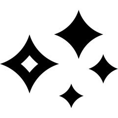
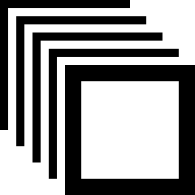
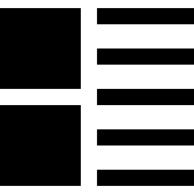

6 External validity: sampling
You have learnt to ask an RQ, and identify a study design. In this chapter, you will learn to:
- distinguish and explain precision and accuracy.
- distinguish and explain random and non-random sampling.
- explain why random samples are preferred over non-random samples.
- identify, describe and use different sampling methods.
- identify ways to obtain samples likely to be representative.
6.1 Introduction
In a research study, the researchers learn about the population by studying just one of the countless possible samples. Ideally the sample that is studied is representative of the population, so the results from the sample generalise to the population. This is called external validity. External validity does not mean that the results apply more widely than the intended population.

Example 6.1 (External validity) Suppose the population in a study is Californian home-owners. The sample comprises the Californian home-owners studied by the researchers. If the study is externally valid, the sample is representative of all Californian home-owners.
The results will not necessarily apply to home-owners outside of Californian, or all Californian residents. However, this is irrelevant for external validity. External validity concerns how the sample represents the intended population in the RQ, which is Californian home-owners.
6.2 The idea of sampling
Studying every member of a population is very rare due to cost, time, ethics, logistics and/or practicality. Instead, a subset of the population (a sample) is studied, and many different samples are possible.
The challenge of research is learning about a population from studying just one of the countless possible samples.

Example 6.2 (Samples) A study of the effectiveness of aspirin in treating headaches cannot possibly study every single human who may one day take aspirin. Not only would this be prohibitively expensive, time consuming, and impractical, but the study would not even study those not yet born who might use aspirin.
Using the whole target population is impossible, and a sample must be used.
Only studying one sample out of countless possible samples raises questions:
- which individuals should be included in the sample to be studied?
- how many individuals should be included in the sample to be studied?
The first issue is studied in this chapter. The second issue is studied later (Chap. 32), after learning about the implications of studying samples rather than populations.
Many samples are possible, and every sample is likely to be different. Hence, the results of studying a sample are likely to vary, depending on which individuals are in the studied sample. The differences between the samples, and differences in the results from each sample, are called sampling variation. That is, each sample has different individuals, produces different data, and may even suggest different answers to the RQ.
Example 6.3 (Number of samples) In a 'population' of just \(100\), the number of possible samples of size \(25\) is more than twice the number of people currently living on earth.
This is the challenge of research: making decisions about populations, using just one of the many possible samples. A lot can be learnt about the population if selecting a sample is approached correctly.
Almost always, researchers study samples, not populations. Many samples are possible, and every sample is likely to be different, and the results from every sample are likely to be different. This is called sampling variation.
As a result, conclusions from a sample are never certainties, though special techniques allow us to still learn about the population from a sample.
Example 6.4 (Sampling variation) The animation below shows how samples vary. We know that \(50\)% of cards in a fair, shuffled pack (a population) are red, but each hand (every sample) of ten cards can produce a different percentage of red cards (and not always \(50\)%). This is a simple example of sampling variation.
6.3 Precision and accuracy
Two questions concerning sampling in Sect. 6.2 were: which individuals should be in the sample, and how many individuals should be in the sample. The first question addresses the accuracy of using a sample value to estimate a population value. The second addresses the precision with which a population value is estimated using a sample. An estimate that is not accurate is called biased (Def. 4.6).
Definition 6.1 (Accuracy) Accuracy refers to how close a sample estimate is likely to be to the population value, on average.
Definition 6.2 (Precision) Precision refers to how similar the sample estimates from different samples are likely to be to each other (that is, how much variation is likely in the sample estimates).
Using this language:
- the sampling method (i.e., how the sample is selected) impacts the accuracy of the sample estimate (i.e., external validity).
- the size of the sample impacts the precision of the sample estimate (i.e., internal validity).
Large samples are more likely to produce precise estimates, but they may or may not be accurate estimates. Similarly, random samples are likely to produce accurate estimates, but they may or may not be precise. As an analogy, consider an archer aiming at a target. The shots can be accurate, or precise, or (ideally) both (Fig. 6.1).
FIGURE 6.1: Precision and accuracy: each dot indicates where a shot at the target lands, and is like a sample estimate of the population value (shown by the central \(\times\)).
Example 6.5 (Precision and accuracy) To estimate the average age of all Canadians, \(9\,000\) Canadian school children could be sampled.
The answer obtained from the sample will be inaccurate because the sample is not representative of all Canadians. Since the sample is large, the answer will give a precise answer but to a different question: 'What is the average age of Canadian school children?'
6.4 Types of sampling
One key to obtaining accurate estimates about the population from the sample is to ensure that the sample faithfully represents the population. So, how is such a sample selected from the population?
The individuals selected for the sample can be chosen using either random sampling or non-random sampling. The word random here has a specific meaning that is different from how it is often used in everyday use. It does not mean 'haphazard', 'erratically' or 'picking individuals as aimlessly as I can'.
Definition 6.3 (Random) Random means determined completely by impersonal chance.
6.4.1 Random sampling
In a random sample, both of these statements are true:
- each individual in the population can be selected.
- each individual is chosen on the basis of impersonal chance (such as using a random number generator, or a table of random numbers).
Some examples of random sampling methods appear in Table 6.1, and are explained further in Sect. 6.5.
Definition 6.4 (Random sample) In a random sample, each individual in the population can be selected; and each individual is chosen on the basis of impersonal chance.
The results obtained from a random sample are likely to generalise to the population from which the sample is drawn; that is, random samples are likely to produce externally valid and accurate studies.
| Type | Stage 1 | Stage 2 | Ref. | |
|---|---|---|---|---|
|  | Simple random | Individuals chosen at random | Sect. 6.5.1 | |

|
Systematic | Start at a random location | Take every \(n\)th element thereafter | Sect. 6.5.2 |
|  | Stratified | Split into a few large groups ('strata') of similar individuals | Select a simple random sample from every stratum | Sect. 6.5.3 |

|
Cluster | Split into many small groups ('clusters'); select simple random sample of clusters | Select all individuals in the chosen clusters | Sect. 6.5.4 |
|  | Multi-stage | Select simple random sample from the larger collection of units | Select simple random sample from those chosen in Stage 1; etc. | Sect. 6.5.5 |
A pot of soup can be tested randomly or non-randomly. If the soup is stirred (randomised), the small spoonful of soup can be tasted to obtain an overall impression. However, an overall impression is not obtained from a non-random sample (i.e., a non-stirred pot of soup).
6.4.2 Non-random sampling
A non-random sample is selected using personal input from the researchers. Examples include:
- judgement samples. Individuals are selected based on the researchers' judgement (possibly unconsciously), perhaps because the individuals are (or may appear) agreeable, supportive, easily accessible, or helpful. For example, researchers may select rats that are less aggressive, or plants that are accessible, or people that look approachable.
- convenience samples. Individuals are selected because they are convenient for the researcher. For example, researchers may study beaches that are nearby, or use their friends for a study.
- voluntary response (self-selecting) samples. Individuals participate if they wish to. For example, researchers may ask people to volunteer to take a survey.
- cherry-picking. Individuals are specifically chosen to reach the conclusion that the researchers want.
In non-random sampling, the individuals in the study are probably different from those not in the study. That is, non-random samples are not likely to be externally valid.
Researchers may use a non-random sample intentionally (e.g., to deceive) which is unethical, or unintentionally (e.g., accidentally, or due to practicality (such as meeting budgets)). Ethically, a random (or somewhat representative sample; Sect. 6.6) should be used when possible.
Using a non-random sample means that the results probably do not generalise to the intended population: they probably do not produce externally valid or accurate studies.

6.5 Methods of random sampling
6.5.1 Simple random sampling
The most straightforward idea for obtaining a random sample is a simple random sample.
Definition 6.5 (Simple random sample) In a simple random sample, every possible sample of a given size has the same chance of being selected.
Selecting a simple random sample requires a list of all members of the population, called the sampling frame, from which to select a sample. Obtaining the sampling frame is often difficult or impossible, and so finding a simple random sample is also difficult. For example, finding a simple random sample of wombats would require having a list and location of all wombats. This is absurd; other random sampling methods, like special ecological sampling methods (e.g., Manly and Alberto (2014)), would be used instead.
Definition 6.6 (Sampling frame) The sampling frame is a list of all the individuals in the population.
Selecting a simple random sample from the sampling frame can be performed using random numbers (e.g., using random number tables, or websites like https://www.random.org). A smaller version of this webpage, which generates one number at a time, is below; just press Generate. The numbers generated by this widget come from the true random number generator at RANDOM.ORG. (The webpage generates as many numbers as you want all at the same time.) Other random sampling methods avoid the need for a sampling frame, but still use randomness rather than human choice.
This book assumes simple random samples, unless otherwise noted.
Example 6.6 (Simple random sampling) Consider the letter-typing RQ again (Example 3.1):
For students in a large university course, is the average typing speed (in words per minute) the same for those aged under \(25\) ('younger') and \(25\) or over ('older')?
Suppose budget and time constraints mean approximately \(40\) students (out of \(441\)) can be selected for the study. The sampling frame is the list of all students enrolled in the course. Obtaining the sampling frame is feasible here; instructors have access to this information for grading.
A simple random sample could be found using the course enrolment list, by first placing all \(441\) student names into rows of a spreadsheet (ordered by name, student ID, or any way).
Then, using random numbers, \(40\) rows are selected at random (without repeating numbers) between \(1\) and \(441\) inclusive.
For instance, when I used
random.org,
the first few random numbers were: 410, 215, 384, 158, 296.
Every student chosen using this method becomes part of the study. If a student could not be contacted or did not respond, more students could be chosen at random to ensure \(40\) students participated (see animation below). By chance, the sample comprises \(15\) younger students and \(25\) older students.
6.5.2 Systematic sampling
In systematic sampling, the first case is randomly selected; then, more individuals are selected at regular intervals thereafter. In general, we say that every \(n\)th individual is selected after the initial random selection.
Example 6.7 (Systematic sampling) For the study in Example 3.1, a sample of \(40\) students in a course of \(441\) is needed. To find a systematic random sample, select a random number between \(1\) and \(441/40\) (approximately \(11\)) as a starting point; suppose the random number selected is \(9\) (as in the animation below).
The first student selected is the \(9\)th person in the student list (which may be ordered alphabetically, by student ID, or other means). Thereafter, every \(441/40\)th person, or \(11\)th person, in the list is selected: people in rows \(9\), \(20\), \(31\), \(42\), and so on (see animation below). By chance, the sample comprises \(17\) younger students and \(23\) older students.
Care needs to be taken when using systematic samples to ensure a pattern is not hidden. Consider taking a systematic sample of every \(10\)th residence on a long street. In many countries, odd numbers are usually on one side of the street, and even numbers usually on the other side. Selecting every \(10\)th house (for example) would include houses all on the same side of the street, and hence with similar exposure to the sun, traffic, etc.
Example 6.8 (Systematic sampling) Alary and Joly (1991) studied households in Quebec to determine if their hot water systems kept their water sufficiently hot to avoid Legionellae bacteria. They used a systematic random sample to select households to study (p. \(2\,361\)):
The first house was selected by using a random-number table. Thereafter, each fifth house that satisfied the [...] criteria was eligible for the study.
6.5.3 Stratified sampling
In stratified sampling, the population is split into a small number of large (usually similar) groups called strata, then cases are selected using a simple random sample from each stratum. Every individual in the population must be in one, and only one, stratum.
Example 6.9 (Stratified sampling) For the typing study in Example 3.1, \(20\) younger and \(20\) older students could be selected to obtain a sample of size \(40\). The sample is stratified by age group of the person (see animation below).
Since \(66.7\)% of the students are younger in the population, the sample could be selected so that two-thirds of the sample of size \(40\) (i.e., \(27\) students) were younger students (see animation below). This is a proportional stratified sample.
Similarly, the second animation below shows how a stratified random sample of size \(40\) might be selected, by randomly selecting \(27\) younger and \(13\) older students.
6.5.4 Cluster sampling
In cluster sampling, the population is split into a large number of small groups called clusters. Then, a simple random sample of clusters is selected, and every member of the chosen clusters become part of the sample. Every individual in the population must be in one, and only one, cluster.
Example 6.10 (Cluster sampling) For the study in Example 3.1, a simple random sample of (say) three of the many small-group classes for the course could be selected, and every student enrolled in those selected small groups constitute the sample (see animation below). By chance, the chosen classes produce a sample size of \(n = 47\) (\(31\) younger; \(16\) older).
6.5.5 Multi-stage sampling
In multi-stage sampling, larger collections of individuals are selected using a simple random sample, then smaller collections of individuals within those large collections are selected using a simple random sample. The simple random sampling continues for as many levels as necessary, until individuals are being selected (at random in each step).
Example 6.11 (Multi-stage sampling) For the study in Example 3.1, a simple random sample of ten of the many small-group classes could be selected (Stage 1), and then four students are randomly selected from each of these \(10\) selected small groups (Stage 2) (see animation below). The sample size is \(10\times 4 = 40\), comprising (by chance) \(24\) younger students and \(16\) older students.
Example 6.12 (Multi-stage sampling) Multi-stage sampling is often used by national statistical agencies. For example, to obtain a multi-stage random sample from a country:
- Stage 1: randomly select some cities in the nation.
- Stage 2: randomly select some suburbs in these chosen cities.
- Stage 3: randomly select some streets in these chosen suburbs.
- Stage 4: randomly select some houses in these chosen streets.
This is cheaper than simple random sampling, as data collectors can be deployed in a small number of cities (only those chosen in Stage 1).
6.5.6 Comparing the samples
The different random sampling methods produce different samples, with different proportions of younger and older students by chance (Table 6.2). Of course, repeating the random sampling processes would produce different samples each time. In all cases, only one of the countless possible samples is studied.
| Younger | Older | Total | Percentage younger | |
|---|---|---|---|---|
| Simple random sample | \(26\) | \(14\) | \(40\) | \(65.0\) |
| Systematic sample | \(31\) | \(\phantom{0}9\) | \(40\) | \(77.5\) |
| Stratified sample: equal | \(20\) | \(20\) | \(40\) | \(50.0\) |
| Stratified sample: proportional | \(27\) | \(13\) | \(40\) | \(67.5\) |
| Cluster sample | \(31\) | \(16\) | \(47\) | \(66.0\) |
| Multi-stage sample | \(24\) | \(16\) | \(40\) | \(60.0\) |
6.6 Representative samples
Obtaining a truly random sample is usually hard or impossible in practice. Sometimes the best compromise is to select a sample sufficiently diverse so that it is likely to be somewhat representative of the diversity in the population. Specifically, those in the sample are not likely to be different from those not in the sample, at least for the variables of interest. This is often the only practical way to sample.
Definition 6.7 (Representative sample) In a representative sample, those in the sample are not likely to be different from those not in the sample, at least for the variables of interest. A representative sample is not a random sample.
As always, the results from any non-random sample may not generalise to the intended population (but will generalise to the population which the sample does represent).

Example 6.13 (Representative sample) Suppose we wish to evaluate the functionality of two types of hand prosthetics.
If a randomly-chosen group of Alaska and Texas residents is asked for their feedback, probably (but not certainly) their views would be similar to those of all Americans. No obvious reason exists for why residents of Alaska and Texas would be very different from residents in the rest of the United States, regarding their view of hand prosthetic functionality.
Even though the sample is not a random sample of all Americans, the results may generalise to all Americans (though we cannot be sure). This sample may be representative of the population.
Example 6.14 (Non-representative samples) Suppose we wish to determine the average time per day that Americans households use their air-conditioners for cooling in summer.
A sample of Texas residents would not be expected to represent all Americans: it would over-represent the average number of hours air-conditioners are used for cooling in summer. In this case, those in the sample are very different to those not in the sample, regarding their air-conditioners usage for cooling in summer.
In contrast, suppose a sample of Alaskans was asked the same question. This sample would not represent all Americans either (it would under-represent air-conditioner use). Again, those in the sample are likely to be very different to those not in the sample, regarding their air-conditioners usage for cooling in summer. This sample would not be representative of the population.
Sometimes, a combination of sampling methods is used. If the combination includes a non-random sampling method, the sampling method does not produce a random sample, but is probably more likely to produce an externally valid sample than a completely non-random sample.
Example 6.15 (A combination of sampling methods) In a study of pathogens present on magazines in doctors' surgeries in Dublin, some suburbs can be selected at random, and then (within each suburb) all surgeries are contacted, and some surgeries volunteer to be part of the study. This study does not use a random sample.
In a study of diets of children at child-care centres, researchers used samples in 2010 and 2016, described as follows (N. Larson, Loth, and Nanney 2019, 336):
In 2010, a stratified random sampling procedure was used to select representative cross-sections of providers working in licensed center-based programs and licensed providers of family home-based care from publicly available lists. [...] Additional participants were also recruited in 2016 using a combination of stratified random and open, convenience-based sampling.
Sometimes, practicalities dictate how the sample is obtained, which may result in a non-random sample. Even so, the impact of using a non-random sample on the conclusions should be discussed (Chap. 8). Sometimes, simple steps can be taken to obtain a sample that is more likely to be representative.
Random samples are often difficult to obtain, and sometimes representative samples are the best that can be achieved, In a representative sample, those in the sample are not obviously different from those not in the sample. Try to ensure that a broad cross-section of the target population appears in the sample.
Even if a random or representative sample cannot be obtained, the study can still be useful. The results still apply to the population represented by the sample. If individuals in the sample are unlikely to be different from individuals not in the sample, for the variables important to the study, the results are likely to approximately apply to the population.

Example 6.16 (Representative sample) For the typing study in Example 3.1, only selecting students who attend the gym, or only students who are at a certain café, is unlikely to be somewhat representative of the student population. Instead, the researchers could approach students at different days, times and locations:
- at the café on Monday at \(8\)am.
- at the gym on Tuesday at \(11\):\(30\)am.
- at the library on Thursdays at \(2\)pm.
This is not a random sample, but should contain a variety of students. Ideally, students would not be included more than once in the sample, though this is often difficult to ensure. The students in the sample are probably somewhat similar to those not in the sample in terms of average typing speeds (there is no obvious reason why they would not be), but we cannot be sure.
The researchers takes a random sample from each of the large groups (cases).
This is a stratified sample.
To determine if the sample is somewhat representative of the population, sometimes information about the sample and population can be compared. The researchers may then be able to make some comment about whether the sample seems reasonably representative. For example, the sex and age of a sample of university students may be recorded; if the proportion of females in the sample, and the average age of students in the sample, are similar to those of the whole university population, then the sample may be considered somewhat representative of the population (though we cannot be sure).

Example 6.17 (Comparing samples and populations) Egbue, Long, and Samaranayake (2017) studied the adoption of electric vehicles (EVs) by Americans, using a sample of \(121\) people found through social media (such as Facebook) and professional engineering channels. This is not a random sample of Americans.
The authors compared some characteristics of the sample with the American population from the \(2010\) census. Compared to the US population, the sample contained a higher percentage of males, a higher percentage of people aged \(18\)--\(44\), and a higher percentage of wealthy individuals.
6.7 Sampling biases
The sample may not be representative of the population for many reasons, all of which compromise how well the sample represents the population (i.e., compromises external validity and accuracy). This is called selection bias.
Definition 6.8 (Selection, non-response and response bias) Selection bias is the tendency of a sample to over- or under-estimate a population quantity.
Non-response bias occurs when chosen participants do not respond: those responding may be different from those not responding.
Response bias occurs when participants provide incorrect or false information.
Selection bias is less common in studies with forward directionality, compared to studies that are non-directional or have backward directionality (Sect. 4.6). Selection bias may occur if the wrong sampling frame is used, or non-random sampling is used. The sample is biased because those in the sample may be different from those not in the sample (which may not always be obvious). Biased samples are less likely to produce externally valid studies.
Example 6.18 (Selection bias) Consider Example 6.14, about estimating the average time per day that air conditioners are used for cooling in summer. Even a random sample of Alaskans produces a biased sample of Americans: the sampling frame (Alaskans) does not represent the target population ('Americans'). This is selection bias.
Non-response bias occurs when chosen participants do not respond. Bias occurs because those who do not respond may be different from those who do respond. Non-response bias can occur because of a poorly-designed survey, using voluntary-response sampling, chosen participants refusing to participate, participants forgetting to return completed surveys, etc.
Example 6.19 (Non-response bias) Consider a study to determine the average number of hours of overtime worked by various professions. People who work a large amount of overtime may be too busy to answer the survey. Those who answer the survey may be likely to work less overtime than those who do not answer the survey. This is an (extreme) example of non-response bias.
Response bias occurs when participants provide incorrect or false information. This may be intentional (for example, respondents lie) or non-intentional (for example, the question is poorly written (see Sect. 9.3.1), personal, or misunderstood).
Example 6.20 (Poor sampling) Obtaining data using a telephone survey only includes people who own a telephone, who answer the phone, who do not hang up, who volunteer to complete the survey, and who then finish the whole survey. The people who participate in the survey must meet these criteria, and probably do not represent the population.
Obtaining data using a TV station call-in at \(6\):\(15\)pm only includes people watching that channel, at that time, and who are sufficiently motivated to call. These people must meet very specific criteria, and probably do not represent the population.
Randomly sampling students at your university, because it is easier than finding a random sample of all university students in your country, will only generalise to students at that university and not to students at all universities in your country.
6.8 Chapter summary
Almost always, the entire population of interest cannot be studied, so a sample (a subset of the population) must be studied. Many samples are possible; only one sample is studied. Samples can be obtained using random or non-random methods. Conclusions made from random samples can usually be generalised to the population (that is, they are externally valid and accurate).
Random sampling methods include simple random samples, systematic samples, stratified samples, cluster samples, and multi-stage samples. Random samples are likely to be externally valid and accurate.
Non-random sampling methods include convenience samples, judgement samples, voluntary (self-selecting) samples, and cherry-picking. Random samples are often very difficult to obtain, so reasonably representative samples are sometimes used, where those in the sample are unlikely to be very different from those not in the sample. Non-random samples may not be externally valid or accurate.
The following video may be helpful.
6.9 Quick review questions
Are the following statements true or false?
- Suppose students are randomly selected and sent postal surveys from their university, but some students have moved and so never receive the survey. This is response bias.
- A large sample is always better than a random sample.
- Convenience sampling and judgement sampling are examples of non-random sampling.
6.10 Exercises
Answers to odd-numbered exercises are given at the end of the book.
Exercise 6.1
What is the main advantage of using a random sample?Exercise 6.2
What is the main advantage of using a large sample?Exercise 6.3 For the following scenarios, is the selected sample likely to over- or under-estimate the unknown population value, or estimate the value accurately? Explain why the over- or -under-estimation occurs, if relevant, and whether this is likely to be intentional or unintentional.
- In a study by biologists to estimate biodiversity, researchers decide to focus only on easily accessible areas of a forest due to budget and time constraints.
- A city council wishes to report the crime rate of various neighbourhoods, so employs interviewers to go door-to-door interviewing residents, between \(8\)am and \(5\)pm.
- In a campaign speech, a politician reports on some large successes during her term.
Exercise 6.4 For the following scenarios, is the selected sample likely to over- or under-estimate the unknown population value, or estimate the value accurately? Explain why the over- or -under-estimation occurs, if relevant, and whether this is likely to be intentional or unintentional.
- A county wants to report the number of homeless, so researchers record data from homeless shelters.
- In a study of soil fertility, a junior researcher takes soil from the surface for testing.
- A university has introduced a complex and time-consuming system for professors to report students suspected of cheating. When the university produces its Annual Report, the reported incidence of cheating is used to claim that 'reports of cheating have dropped'.
Exercise 6.5 A researcher has three months in which to collect the data for a study on car park usage at a shopping centre. Suppose the researcher wants to take a systematic sample of days, and on each of the selected days records the number of cars in the car park.
To select the days in which to collect data, she decides (by using random numbers) to start data collection on a Tuesday, and then every seventh day thereafter.
- What problem is evident in this sampling scheme?
- What suggestions would you give to improve the sampling?
Exercise 6.6 Suppose you need to estimate the average number of pages in physical books in a university library (with a library in each of five campuses). Describe how to select a sample of \(200\) books using:
- a simple random sample of books.
- a stratified sample of books.
- a cluster sample of books.
- a convenience sample of books.
- a multi-stage sample of books.
Which sampling scheme would be most practical?
Exercise 6.7 Suppose you need a sample of residents from apartments in a large residential complex, comprising \(30\) floors with \(15\) apartments on each floor. You plan to survey the residents of these apartments. For each of the possible sampling schemes given below, first describe the sampling scheme, and then determine which methods are likely to give random (or representative) sample (explaining your answers).
- Randomly select five floors, then randomly select four apartments from each of those five floors, and interview a randomly-chosen adult living at the apartment.
- Randomly select one floor, and select the \(15\) apartments on that floor, then interview the oldest resident of that apartment.
- Wait at the ground-floor elevator, and ask people who emerge to complete the survey.
- Randomly select five floors, then wait by the elevator on those floors and survey residents as they arrive at the elevator.
Exercise 6.8 Suppose a researcher needs a sample of customers from a large, local shopping centre to complete a questionnaire. Four sampling schemes are listed below. For each, describe the type of sampling. Then, determine which would be the best method (explain why), and determine which (if any) produce a random sample.
- The researcher locates themselves outside the supermarket at the shopping centre one morning, and approaches every tenth person who walks past.
- The researcher waits at the main entrance for \(30\,\text{mins}\) at \(8\)am every morning for a week, and approaches every fifth person.
- The researcher leaves a pile of survey forms at an unattended booth in the shopping centre, and a locked barrel in which to place completed surveys.
- The researcher goes to the shopping centre every day for two weeks, at a different time and location each day, and approaches someone every \(15\,\text{mins}\).
Exercise 6.9 Ridgewell, Sipe, and Buchanan (2009) investigated how children in Brisbane travel to state schools. Researchers randomly sampled four schools from a list of all Brisbane state schools, and invited every family at each of those four schools to complete a survey.
What type of sampling method is this? How could the researchers determine if the resulting sample was approximately representative?
Exercise 6.10 A study comparing two new malaria vaccines recruited \(200\) Kenyans who had contracted malaria. These recruits were obtained by approaching all patients with a confirmed malaria diagnosis who were admitted to hospitals. Patients could volunteer for the study or not. The study was then conducted to a high standard. Which of the following statements are true?
- This is a voluntary response sample.
- The study is likely to have high external validity.
- The sample size is too small for the study results to provide useful information.
Exercise 6.11 Suppose a natural forest region is classified into two quite different zones. Zone A is mostly dunes and lightly vegetated, and on the coastal side of a ridge; Zone B is more densely vegetated and on the inland side of the ridge.
A sample of sugar ants (Camponotus app) is taken from Zone A, and another sample of sugar ants from Zone B, to study the average size of the ants. What is the best description of the type of sampling method being used?
Exercise 6.12 A survey in 2001 concluded (Hieger (2001), cited in Bock, Velleman, and Veaux (2010), p. 283):
All but \(2\)% of the home buyers have at least one computer at home, and \(62\)% have two or more. Of those with a computer, \(99\)% are connected to the internet.
The article later reveals the survey was conducted online (recall the survey was conducted in 2001). The target population is home buyers; however, home buyers with internet access were far more likely to complete the survey than home buyers without internet access.
What type of bias is this?
Exercise 6.13 Researchers are studying the percentage of farms that use a specific management technique. The researchers randomly select \(20\) regions around the country, then randomly select farms within each region, then ask farmers to volunteer to be in the study.
Explain why this is not a multi-stage sample, and what changes are necessary for the researchers to have a multi-stage sample.
Exercise 6.14 Researchers are comparing the average time that experienced school teachers and first-year school teachers spend in the sun. The researchers select schools by asking school principals to volunteer their schools, then record information for every teacher in those schools.
Explain why this is not a cluster sample, and what changes are necessary for the researchers to have a cluster sample.
Exercise 6.15 Walters, Kaminsky, and Huepe (2018) asked this RQ:
What factors are preventing the adoption of household solar technologies in Santiago?
- For this RQ, what is the Population?
- The study will be externally valid if which of these statements is true?
- The sample is representative of all households in the world.
- The sample is representative of all solar technologies.
- The sample is representative of all households in Santiago.
- The sample is representative of all households in Chile.
- Suppose the researchers mail surveys to all households in Santiago, and people return the survey if they wished to. What is the best description of this sampling method?
- Suppose the researchers randomly select five suburbs in Santiago; then ten streets within each suburb; then ten households on each street. What is the best description of this sampling method?